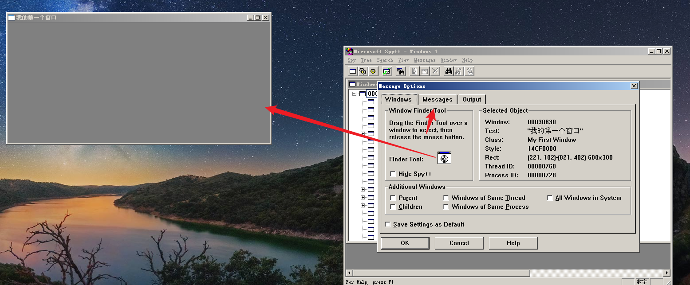
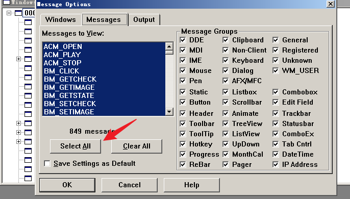
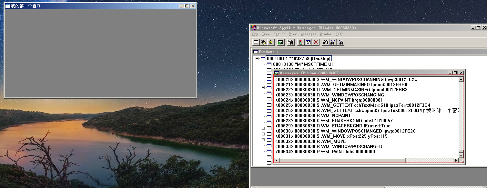
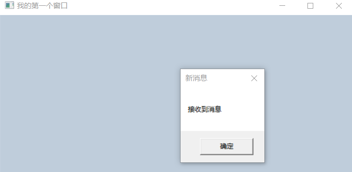
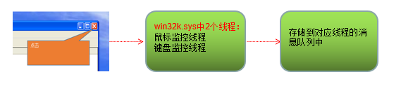
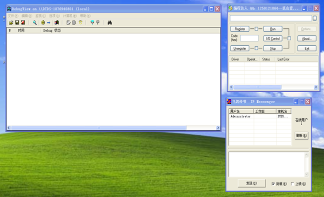
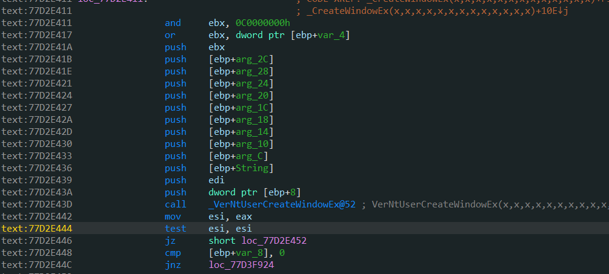
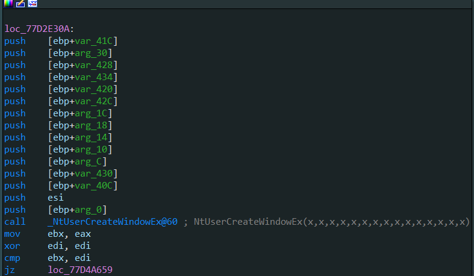

# 楔子
在上一节中我们弄清楚了消息队列与线程的关系：
一个 GUI 线程对应着一个消息队列
本节要解决的问题：
1、消息从哪里来？
2、消息到哪里去？
3、谁来做这些事情？
# 消息从哪里来？
首先我们编写一个简单的窗口程序：
#include <windows.h> | |
LRESULT CALLBACK WindowProc( | |
IN HWND hwnd, | |
IN UINT uMsg, | |
IN WPARAM wParam, | |
IN LPARAM lParam | |
){ | |
return DefWindowProc(hwnd, uMsg, wParam, lParam); | |
} | |
int APIENTRY WinMain( | |
HINSTANCE hInstance, | |
HINSTANCE hPrevInstance, | |
LPSTR lpCmdLine, | |
int nShowCmd | |
){ | |
// 窗口的类名 | |
TCHAR className[] = "My First Window"; | |
// 创建一个自己的窗口 | |
WNDCLASS wndclass = {0}; | |
wndclass.hbrBackground = (HBRUSH)COLOR_MENU; | |
wndclass.lpfnWndProc = WindowProc; | |
wndclass.lpszClassName = className; | |
wndclass.hInstance = hInstance; | |
// 注册 | |
RegisterClass(&wndclass); | |
// 创建窗口 | |
HWND hwnd = CreateWindow( | |
className, | |
TEXT("我的第一个窗口"), | |
WS_OVERLAPPEDWINDOW, | |
10, | |
10, | |
600, | |
300, | |
NULL, | |
NULL, | |
hInstance, | |
NULL); | |
if(hwnd == NULL) | |
return 0; | |
// 显示窗口 | |
ShowWindow(hwnd, SW_SHOW); | |
// 消息循环 | |
MSG msg; | |
while(GetMessage(&msg, NULL, 0, 0)) | |
{ | |
TranslateMessage(&msg); | |
DispatchMessage(&msg); | |
} | |
return 0; | |
} |
然后用 VC6 自带的工具 Spy++ 捕捉消息。
按以下步骤捕获消息：


如图我们动一下鼠标键盘就会 产生许多消息。

接下来用代码演示，程序发送消息：
一个进程执行以下代码：
#include <windows.h> | |
LRESULT CALLBACK WindowProc( | |
IN HWND hwnd, | |
IN UINT uMsg, | |
IN WPARAM wParam, | |
IN LPARAM lParam | |
){ | |
switch(uMsg) | |
{ | |
case 0x401: | |
MessageBoxA(NULL, "接收到消息", "新消息", MB_OK); | |
return false; | |
} | |
return DefWindowProc(hwnd, uMsg, wParam, lParam); | |
} | |
int APIENTRY WinMain( | |
HINSTANCE hInstance, | |
HINSTANCE hPrevInstance, | |
LPSTR lpCmdLine, | |
int nShowCmd | |
){ | |
// 窗口的类名 | |
TCHAR className[] = "My First Window"; | |
// 创建一个自己的窗口 | |
WNDCLASS wndclass = {0}; | |
wndclass.hbrBackground = (HBRUSH)COLOR_MENU; | |
wndclass.lpfnWndProc = WindowProc; | |
wndclass.lpszClassName = className; | |
wndclass.hInstance = hInstance; | |
// 注册 | |
RegisterClass(&wndclass); | |
// 创建窗口 | |
HWND hwnd = CreateWindow( | |
className, | |
TEXT("我的第一个窗口"), | |
WS_OVERLAPPEDWINDOW, | |
10, | |
10, | |
600, | |
300, | |
NULL, | |
NULL, | |
hInstance, | |
NULL); | |
if(hwnd == NULL) | |
return 0; | |
// 显示窗口 | |
ShowWindow(hwnd, SW_SHOW); | |
// 消息循环 | |
MSG msg; | |
while(GetMessage(&msg, NULL, 0, 0)) | |
{ | |
TranslateMessage(&msg); | |
DispatchMessage(&msg); | |
} | |
return 0; | |
} |
另一个进程执行以下代码：
#include <stdio.h> | |
#include <windows.h> | |
int main() | |
{ | |
HWND hwnd = FindWindow("My First Window", "我的第一个窗口"); | |
SendMessage(hwnd, 0x401, 0, 0); | |
return 0; | |
} |
结果：

# 消息到哪里去了
最终去这个消息所对应的那个线程的消息队列。
- 当我们使用鼠标某个窗口进行点击与滑动时，都会产生一个消息，消息会进入当前窗口对应线程的消息队列中
- 当我们编写程序时，并不会去特地启动两个线程去监控鼠标和键盘，w32k.sys 负责了这个事情

以下内容参考自 ReactOS 源码：
当初始化
win32k.sys这个模块时，会调用一个叫做InitInputImpl的函数
这个函数会启动两个线程，分别用来监控鼠标和键盘，这两个线程都是 0 环的线程
平时我们的电脑遭遇 “死机” 时，常常是屏幕动不了，鼠标还能动，这正式由于鼠标是有一个独立的线程在监控它的行动
//FROM ReactOS v3.12 | |
InitInputImpl(VOID) | |
{ | |
... | |
Status = PsCreateSystemThread(&RawInputThreadHandle, // 监控鼠标 | |
THREAD_ALL_ACCESS, | |
NULL, | |
NULL, | |
&RawInputThreadId, | |
RawInputThreadMain, | |
NULL); | |
if (!NT_SUCCESS(Status)) | |
{ | |
DPRINT1("Win32K: Failed to create raw thread.\n"); | |
} | |
Status = PsCreateSystemThread(&KeyboardThreadHandle, // 监控键盘 | |
THREAD_ALL_ACCESS, | |
NULL, | |
NULL, | |
&KeyboardThreadId, | |
KeyboardThreadMain, | |
NULL); | |
if (!NT_SUCCESS(Status)) | |
{ | |
DPRINT1("Win32K: Failed to create keyboard thread.\n"); | |
} | |
... | |
} |
我在 xp 源码中并未找到。。
# 如何通过窗口找到消息队列
如下图： 我们发现有十几个窗口，当我们在一个窗口上点击的时候，负责鼠标消息的这个线程是如何知道我们点击的是哪一个窗口呢？
换句话说就是，它是如何通过这个窗口找到对应的线程的呢？

我们想解决这些问题，首先要明白窗口是谁画的，窗口在哪里？
# 窗口是谁画的？
分析： CreateWindow
当调用 CreateWindow 时，该函数实际上是一个宏，其 CreateWindowA 实际对应 CreateWindowExA 函数，CreateWindowW 对应 CreateWindowExW 函数。
在 VS 中查看：
#define CreateWindowA(lpClassName, lpWindowName, dwStyle, x, y,\ | |
nWidth, nHeight, hWndParent, hMenu, hInstance, lpParam)\ | |
CreateWindowExA(0L, lpClassName, lpWindowName, dwStyle, x, y,\ | |
nWidth, nHeight, hWndParent, hMenu, hInstance, lpParam) | |
#define CreateWindowW(lpClassName, lpWindowName, dwStyle, x, y,\ | |
nWidth, nHeight, hWndParent, hMenu, hInstance, lpParam)\ | |
CreateWindowExW(0L, lpClassName, lpWindowName, dwStyle, x, y,\ | |
nWidth, nHeight, hWndParent, hMenu, hInstance, lpParam) | |
#ifdef UNICODE | |
#define CreateWindow CreateWindowW | |
#else | |
#define CreateWindow CreateWindowA | |
#endif // !UNICODE |
在 IDA 中查看:
发现不管是 CreateWindowExA 还是 CreateWindowExW 都是直接调用了 __CreateWindowEx
text:77D2E4A9 ; HWND __stdcall CreateWindowExA(DWORD dwExStyle, LPCSTR lpClassName, LPCSTR lpWindowName, DWORD dwStyle, int X, int Y, int nWidth, int nHeight, HWND hWndParent, HMENU hMenu, HINSTANCE hInstance, LPVOID lpParam) | |
.text:77D2E4A9 public _CreateWindowExA@48 | |
.text:77D2E4A9 _CreateWindowExA@48 proc near ; CODE XREF: DefMDIChildProcWorker(x,x,x,x,x)-3EA↓p | |
.text:77D2E4A9 ; CreateMDIWindowA(x,x,x,x,x,x,x,x,x,x)+27↓p ... | |
.text:77D2E4A9 | |
.text:77D2E4A9 dwExStyle = dword ptr 8 | |
.text:77D2E4A9 lpClassName = dword ptr 0Ch | |
.text:77D2E4A9 lpWindowName = dword ptr 10h | |
.text:77D2E4A9 dwStyle = dword ptr 14h | |
.text:77D2E4A9 X = dword ptr 18h | |
.text:77D2E4A9 Y = dword ptr 1Ch | |
.text:77D2E4A9 nWidth = dword ptr 20h | |
.text:77D2E4A9 nHeight = dword ptr 24h | |
.text:77D2E4A9 hWndParent = dword ptr 28h | |
.text:77D2E4A9 hMenu = dword ptr 2Ch | |
.text:77D2E4A9 hInstance = dword ptr 30h | |
.text:77D2E4A9 lpParam = dword ptr 34h | |
.text:77D2E4A9 | |
.text:77D2E4A9 mov edi, edi | |
.text:77D2E4AB push ebp | |
.text:77D2E4AC mov ebp, esp | |
.text:77D2E4AE push 40000001h ; int | |
.text:77D2E4B3 push [ebp+lpParam] ; int | |
.text:77D2E4B6 push [ebp+hInstance] ; int | |
.text:77D2E4B9 push [ebp+hMenu] ; int | |
.text:77D2E4BC push [ebp+hWndParent] ; int | |
.text:77D2E4BF push [ebp+nHeight] ; int | |
.text:77D2E4C2 push [ebp+nWidth] ; int | |
.text:77D2E4C5 push [ebp+Y] ; int | |
.text:77D2E4C8 push [ebp+X] ; int | |
.text:77D2E4CB push [ebp+dwStyle] ; int | |
.text:77D2E4CE push [ebp+lpWindowName] ; String | |
.text:77D2E4D1 push [ebp+lpClassName] ; MultiByteString | |
.text:77D2E4D4 push [ebp+dwExStyle] ; char | |
.text:77D2E4D7 call __CreateWindowEx@52 ; _CreateWindowEx(x,x,x,x,x,x,x,x,x,x,x,x,x) | |
.text:77D2E4DC pop ebp | |
.text:77D2E4DD retn 30h ; '0' | |
.text:77D2E4DD _CreateWindowExA@48 endp |
.text:77D2D0A3 ; HWND __stdcall CreateWindowExW(DWORD dwExStyle, LPCWSTR lpClassName, LPCWSTR lpWindowName, DWORD dwStyle, int X, int Y, int nWidth, int nHeight, HWND hWndParent, HMENU hMenu, HINSTANCE hInstance, LPVOID lpParam) | |
.text:77D2D0A3 public _CreateWindowExW@48 | |
.text:77D2D0A3 _CreateWindowExW@48 proc near ; CODE XREF: DefMDIChildProcWorker(x,x,x,x,x):loc_77D30688↓p | |
.text:77D2D0A3 ; CreateMDIWindowW(x,x,x,x,x,x,x,x,x,x)+27↓p ... | |
.text:77D2D0A3 | |
.text:77D2D0A3 dwExStyle = dword ptr 8 | |
.text:77D2D0A3 lpClassName = dword ptr 0Ch | |
.text:77D2D0A3 lpWindowName = dword ptr 10h | |
.text:77D2D0A3 dwStyle = dword ptr 14h | |
.text:77D2D0A3 X = dword ptr 18h | |
.text:77D2D0A3 Y = dword ptr 1Ch | |
.text:77D2D0A3 nWidth = dword ptr 20h | |
.text:77D2D0A3 nHeight = dword ptr 24h | |
.text:77D2D0A3 hWndParent = dword ptr 28h | |
.text:77D2D0A3 hMenu = dword ptr 2Ch | |
.text:77D2D0A3 hInstance = dword ptr 30h | |
.text:77D2D0A3 lpParam = dword ptr 34h | |
.text:77D2D0A3 | |
.text:77D2D0A3 mov edi, edi | |
.text:77D2D0A5 push ebp | |
.text:77D2D0A6 mov ebp, esp | |
.text:77D2D0A8 push 40000000h ; int | |
.text:77D2D0AD push [ebp+lpParam] ; int | |
.text:77D2D0B0 push [ebp+hInstance] ; int | |
.text:77D2D0B3 push [ebp+hMenu] ; int | |
.text:77D2D0B6 push [ebp+hWndParent] ; int | |
.text:77D2D0B9 push [ebp+nHeight] ; int | |
.text:77D2D0BC push [ebp+nWidth] ; int | |
.text:77D2D0BF push [ebp+Y] ; int | |
.text:77D2D0C2 push [ebp+X] ; int | |
.text:77D2D0C5 push [ebp+dwStyle] ; int | |
.text:77D2D0C8 push [ebp+lpWindowName] ; String | |
.text:77D2D0CB push [ebp+lpClassName] ; MultiByteString | |
.text:77D2D0CE push [ebp+dwExStyle] ; char | |
.text:77D2D0D1 call __CreateWindowEx@52 ; _CreateWindowEx(x,x,x,x,x,x,x,x,x,x,x,x,x) | |
.text:77D2D0D6 pop ebp | |
.text:77D2D0D7 retn 30h ; '0' | |
.text:77D2D0D7 _CreateWindowExW@48 endp |
查看 __CreateWindowEx :

发现其主要调用了 VerNtUserCreateWindowEx
接着查看：

发现其主要调用了 NtUserCreateWindowEx
查看 NtUserCreateWindowEx 发现其通过系统调用进 0 环了
.text:77D2E37D ; __stdcall NtUserCreateWindowEx(x, x, x, x, x, x, x, x, x, x, x, x, x, x, x) | |
.text:77D2E37D _NtUserCreateWindowEx@60 proc near ; CODE XREF: VerNtUserCreateWindowEx(x,x,x,x,x,x,x,x,x,x,x,x,x)+158↑p | |
.text:77D2E37D mov eax, 1157h | |
.text:77D2E382 mov edx, 7FFE0300h | |
.text:77D2E387 call dword ptr [edx] | |
.text:77D2E389 retn 3Ch ; '<' | |
.text:77D2E389 _NtUserCreateWindowEx@60 endp |
所以窗口是 0 环画的。
# 窗口对象
窗口在内核同样也有一个对应的结构。
通过分析 XP 的源码观察 CreateWindow 窗口的创建过程，发现其涉及了好多结构体。
以下是我在 XP 源码中的发现：
从此函数开始：
PTHREADINFO PtiCurrent(VOID) | |
{ | |
ConnectIfNecessary(0); | |
return (PTHREADINFO)NtCurrentTebShared()->Win32ThreadInfo; | |
} |
typedef struct tagTHREADINFO { | |
W32THREAD; | |
//***************************************** begin: USER specific fields | |
PTL ptl; // Listhead for thread lock list | |
PPROCESSINFO ppi; // process info struct for this thread | |
PQ pq; // keyboard and mouse input queue | |
PKL spklActive; // active keyboard layout for this thread | |
PCLIENTTHREADINFO pcti; // Info that must be visible from client | |
PDESKTOP rpdesk; | |
PDESKTOPINFO pDeskInfo; // Desktop info visible to client | |
PCLIENTINFO pClientInfo; // Client info stored in TEB | |
DWORD TIF_flags; // TIF_ flags go here. | |
PUNICODE_STRING pstrAppName; // Application module name. | |
PSMS psmsSent; // Most recent SMS this thread has sent | |
PSMS psmsCurrent; // Received SMS this thread is currently processing | |
PSMS psmsReceiveList; // SMSs to be processed | |
LONG timeLast; // Time and ID of last message | |
ULONG_PTR idLast; | |
int exitCode; | |
HDESK hdesk; // Desktop handle | |
int cPaintsReady; | |
UINT cTimersReady; | |
PMENUSTATE pMenuState; | |
union { | |
PTDB ptdb; // Win16Task Schedule data for WOW thread | |
PWINDOWSTATION pwinsta; // Window station for SYSTEM thread | |
}; | |
PSVR_INSTANCE_INFO psiiList; // thread DDEML instance list | |
DWORD dwExpWinVer; | |
DWORD dwCompatFlags; // The Win 3.1 Compat flags | |
DWORD dwCompatFlags2; // new DWORD to extend compat flags for NT5+ features | |
PQ pqAttach; // calculation variabled used in | |
// zzzAttachThreadInput() | |
PTHREADINFO ptiSibling; // pointer to sibling thread info | |
PMOVESIZEDATA pmsd; | |
DWORD fsHooks; // WHF_ Flags for which hooks are installed | |
PHOOK sphkCurrent; // Hook this thread is currently processing | |
PSBTRACK pSBTrack; | |
HANDLE hEventQueueClient; | |
PKEVENT pEventQueueServer; | |
LIST_ENTRY PtiLink; // Link to other threads on desktop | |
int iCursorLevel; // keep track of each thread's level | |
POINT ptLast; // Position of last message | |
PWND spwndDefaultIme; // Default IME Window for this thread | |
PIMC spDefaultImc; // Default input context for this thread | |
HKL hklPrev; // Previous active keyboard layout | |
int cEnterCount; | |
MLIST mlPost; // posted message list. | |
USHORT fsChangeBitsRemoved;// Bits removed during PeekMessage | |
WCHAR wchInjected; // character from last VK_PACKET | |
DWORD fsReserveKeys; // Keys that must be sent to the active | |
// active console window. | |
PKEVENT *apEvent; // Wait array for xxxPollAndWaitForSingleObject | |
ACCESS_MASK amdesk; // Granted desktop access | |
UINT cWindows; // Number of windows owned by this thread | |
UINT cVisWindows; // Number of visible windows on this thread | |
PHOOK aphkStart[CWINHOOKS]; // Hooks registered for this thread | |
CLIENTTHREADINFO cti; // Use this when no desktop is available | |
#ifdef GENERIC_INPUT | |
HANDLE hPrevHidData; | |
#endif | |
#if DBG | |
UINT cNestedCalls; | |
#endif | |
} THREADINFO; |
其中 W32THREAD
// | |
// This is the header shared info for W32 threads. It is followed by the | |
// NtUser per thread information. | |
// | |
typedef struct _W32THREAD { | |
PETHREAD pEThread; | |
ULONG RefCount; | |
PTL ptlW32; | |
KERNEL_PVOID pgdiDcattr; | |
KERNEL_PVOID pgdiBrushAttr; | |
KERNEL_PVOID pUMPDObjs; | |
KERNEL_PVOID pUMPDHeap; | |
ULONG dwEngAcquireCount; | |
KERNEL_PVOID pSemTable; | |
KERNEL_PVOID pUMPDObj; | |
#if defined(_WIN64) | |
KERNEL_PVOID pProxyPort; | |
KERNEL_PVOID pClientID; | |
#endif | |
} W32THREAD, * KPTR_MODIFIER PW32THREAD; |
/* | |
* Extended structures for message thunking. | |
*/ | |
typedef struct _CREATESTRUCTEX { | |
CREATESTRUCT cs; | |
LARGE_STRING strName; | |
LARGE_STRING strClass; | |
} CREATESTRUCTEX, *PCREATESTRUCTEX; |
/* WM_CREATE/WM_NCCREATE lParam struct */ | |
typedef struct tagCREATESTRUCT | |
{ | |
void FAR* lpCreateParams; | |
HINSTANCE hInstance; | |
HMENU hMenu; | |
HWND hwndParent; | |
int cy; | |
int cx; | |
int y; | |
int x; | |
LONG style; | |
LPCSTR lpszName; | |
LPCSTR lpszClass; | |
DWORD dwExStyle; | |
} CREATESTRUCT; |
通过分析 xxxCreateWindowEx 函数，最终发现窗口实例结构：
/* | |
* sizeof(THROBJHEAD) must be equal to sizeof(PROCOBJHEAD) | |
* This is to make sure that DESKHEAD fields are always at the same offset. | |
*/ | |
typedef struct _THROBJHEAD { | |
HEAD; | |
PTHREADINFO pti; | |
} THROBJHEAD, * KPTR_MODIFIER PTHROBJHEAD; | |
typedef struct _THRDESKHEAD { | |
THROBJHEAD; | |
DESKHEAD; | |
} THRDESKHEAD, *PTHRDESKHEAD; | |
typedef struct tagWND { | |
THRDESKHEAD head; | |
WW; // WOW-USER common fields. Defined in wowuserp.h | |
// The presence of "state" at the start of this structure is | |
// assumed by the STATEOFFSET macro. | |
PWND spwndNext; // Handle to the next window | |
PWND spwndPrev; // Handle to the previous window | |
PWND spwndParent; // Backpointer to the parent window. | |
PWND spwndChild; // Handle to child | |
PWND spwndOwner; // Popup window owner field | |
RECT rcWindow; // Window outer rectangle | |
RECT rcClient; // Client rectangle | |
WNDPROC_PWND lpfnWndProc; // Can be WOW address or standard address | |
PCLS pcls; // Pointer to window class | |
KHRGN hrgnUpdate; // Accumulated paint region | |
PPROPLIST ppropList; // Pointer to property list | |
PSBINFO pSBInfo; // Words used for scrolling | |
PMENU spmenuSys; // Handle to system menu | |
PMENU spmenu; // Menu handle or ID | |
KHRGN hrgnClip; // Clipping region for this window | |
LARGE_UNICODE_STRING strName; | |
int cbwndExtra; // Extra bytes in window | |
PWND spwndLastActive; // Last active in owner/ownee list | |
KHIMC hImc; // Associated input context handle | |
KERNEL_ULONG_PTR dwUserData; // Reserved for random application data | |
struct _ACTIVATION_CONTEXT * KPTR_MODIFIER pActCtx; | |
#ifdef LAME_BUTTON | |
KERNEL_PVOID pStackTrace; // Creation stack trace; used by lame | |
// button. | |
#endif // LAME_BUTTON | |
} WND; |
这个就是窗口在内核对应的结构体
# 消息进入窗口消息队列的过程
- 当使用鼠标在某个窗口上点击时，鼠标监控线程检测到点击的窗口对象
- 根据窗口对象成员，找到窗口对应线程
- 将消息放入该线程的消息队列中
# 总结
- 窗口在 0 环创建
- 窗口句柄是全局的
- 一个线程可以使用多个窗口，但每个窗口只能属于一个线程
# Reference
https://blog.csdn.net/qq_41988448/article/details/112827822